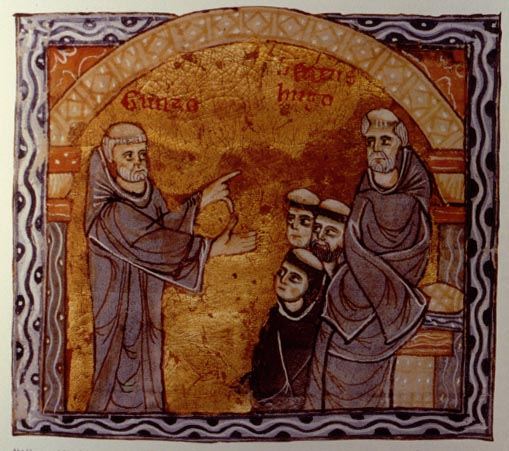
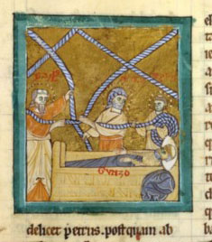
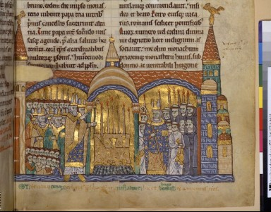

Cluny III
| Abbot Hugh (1049-1109), born in 1024, the son of a count, became a monk at Cluny in 1038. His abilities were recognized, and he rose quickly in the hierarchy; he was unanimously elected abbot at age 24, in 1049. Like his predecessors he travelled through Europe, very important in politics and religious reform, together with reforming popes. |  (Gunzo, left, tells of his vision to Abbot Hugh, seated, right; Bibliothèque Nationale ms. lat. 17716, c. 1189) |
| Under Hugh, a new church was built at Cluny, much larger than
the previous
ones. It was planned as early as 1085, and the first sponsor was
King Alfonso VI of Spain, who gave 10,000 gold coins as a
thank-offering
for the capture of Toledo from Muslims in 1085. The church and
monastery
had numerous other royal sponsors also.
The architects were Gunzo, a monk of Cluny, former abbot of Baume and a musician, and Hezelon, a mathematician, who probably managed the building enterprise. The legend goes that Gunzo was near death, and had a dream in which Peter, Paul, and Stephen came to him and said they would add on seven years of life if he would build what they told him. Then ropes dropped down on which were measured the dimensions of the huge church. |
 |
| (The vision of Gunzo) |
The eastern part of the church (the choir) was dedicated in 1095 by Pope Urban II (a former Clunaic monk).
